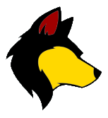

NodeGui
is the third way to make desktop apps with SmallJS.
NodeGui is an npm package that encapsulates the multi platform
Qt
GUI framework.
Its API is only minimally implemented in SmallJS, just enough for the example app.
Feel free to contribute to expand it.. :)
Compared to Electron, NodeGui is more memory efficient and less complex to develop in.
Compared to NW.js, it is less based on HTML / CSS, it has its own libraries.
If you are already familiar with Qt, it may be a good choice to use with SmallJS.
In this tutorial section, we'll be examining the Example NodeGui app.

Lets start by opening the NWjs example project.